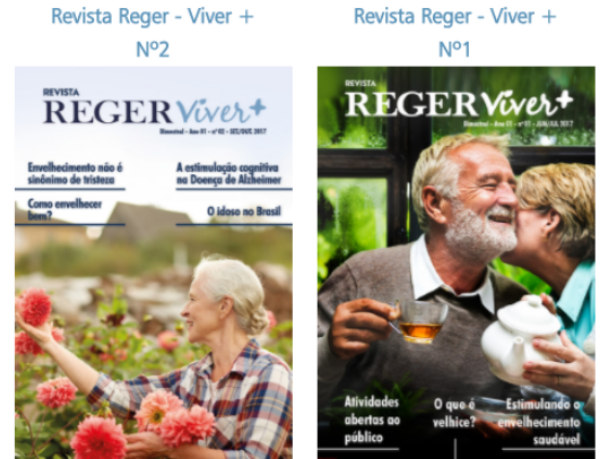
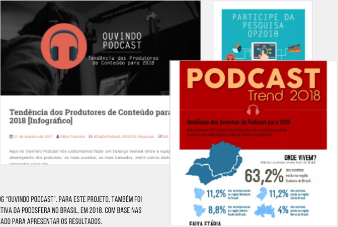

Atendimento consultivo
Gerencio carteiras, conduzo reuniões e traduzo indicadores de desempenho orgânico em prioridades para cada cliente.
Marketing de Conteúdo SEO Copywriter
Conecto as prioridades dos clientes ao trabalho das equipes de SEO, Conteúdo e Desenvolvimento, do planejamento à análise de desempenho.

Atendo clientes nacionais e internacionais e trago mais de uma década de experiência em conteúdo SEO para projetos B2B e B2C.
Gerencio carteiras, conduzo reuniões e traduzo indicadores de desempenho orgânico em prioridades para cada cliente.
Organizo cronogramas, alinho equipes e acompanho a implementação de recomendações de SEO técnico e on-page.
Uso pesquisa de palavras-chave e dados de desempenho para planejar pautas e otimizar conteúdo para diferentes canais, de blogs a e-commerce.
Combino análise de dados e criação editorial para apoiar o crescimento orgânico. Na prática, uso os indicadores de desempenho para identificar pautas e páginas que valem um novo investimento, orientar a equipe de redação e ajustar a estratégia de conteúdo.
Da produção editorial à coordenação de projetos e ao relacionamento com clientes.
Gestão de carteira, priorização de demandas e coordenação de entregas com equipes de SEO, Conteúdo e Desenvolvimento. Apresentação de resultados e acompanhamento de recomendações técnicas.
Anteriormente Atendimento SEO Júnior · ago 2025 – jul 2026
Produção de artigos, e-books e textos de apoio para e-commerce, com pesquisa de palavras-chave e otimização para busca.
Estratégia de SEO para clientes B2B e B2C, gestão de blogs e auditorias técnicas em colaboração com Desenvolvimento e UX. Coordenação de freelancers e treinamento de redatores.
Planejamento de conteúdo, otimização on-page, análise de desempenho, relatórios e treinamento da equipe de redação.
Projetos de SEO e conteúdo, campanhas digitais e produções autorais.
Redação SEO
Mais de 100 conteúdos como redatora freelancer, entre artigos, e-books, e-mails e infográficos. As pautas passaram por arquitetura, e-commerce, tecnologia e bem-estar.
Gestão de conteúdo
Produção e gestão de mais de 100 conteúdos para blogs corporativos de energia solar, educação, saúde e outros segmentos.
SEO on-page
Mais de 300 textos para páginas de categoria, descrições de produtos e páginas institucionais. Projetos para marcas como Brooksfield, Richards e Ellus.
Estratégia de marketing para uma plataforma de financiamento coletivo, com conteúdo para blog e redes sociais, podcast, campanhas, funil de vendas e testes manuais de usabilidade.
Planejamento editorial e gestão de redes sociais, com campanhas, análise de métricas e coordenação da revista Reger Viver Mais, sobre geriatria e cuidados com pessoas idosas.

Criação de conteúdos para redes sociais, blog e e-books, com campanhas, landing pages e e-mails no RD Station para captação e nutrição de leads.
Planejamento de pautas, redação para blog e redes sociais e curadoria de imagens para publicação.
Planejamento de conteúdo, redação, curadoria de imagens e criação de campanhas com influenciadores digitais.
Produção de textos e gestão de redes sociais para a comunidade empreendedora, com acompanhamento de métricas de engajamento.
Estratégia e produção de conteúdo para redes sociais, análise de métricas e criação de um podcast sobre inbound marketing.
Desenvolvimento de materiais ricos e otimização de landing pages e campanhas de e-mail no RD Station para gerar leads.
Mapeamento de canais e relacionamento com influenciadores, com produção de conteúdo e análise de métricas.
Conteúdo e gestão de redes sociais para o lançamento do sabor Chipotle, com planejamento de mídia e ações por localização.
Pesquisa de mercado, relacionamento com consumidores e gestão de campanha no Google Ads para promover programas de intercâmbio.
Redação SEO para o blog e produção de um infográfico com os resultados de uma pesquisa sobre a cena brasileira de podcasts em 2018.

Produção de conteúdo SEO para o blog CarePlus Mais, voltado ao público de planos de saúde corporativos.
Roteiros e produção de chamadas para programas e filmes, criação de vinhetas e acompanhamento da edição de vídeo.
Apresentação, roteiro e edição de áudio em um podcast sobre empoderamento feminino, cultura pop, comunicação e psicologia.
Coapresentação, roteiro, direção de episódios e conteúdo para redes sociais em um podcast sobre o gênero de terror na cultura pop.
Edição em Adobe Premiere de vídeos curtos para um canal de culinária.
Entre em contato para conversar sobre vagas ou projetos de SEO e conteúdo.